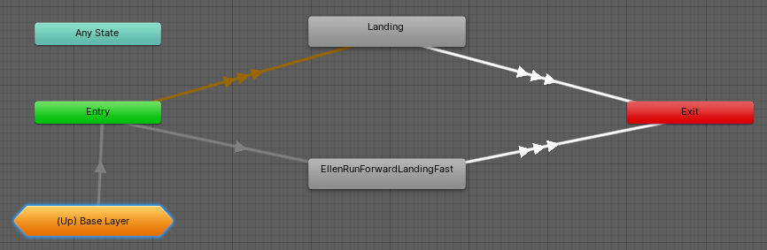

This page is part of the 3D Game Kit example.
The character has several different animations to play when you land on the ground which it blends between based on your horizontal and vertical speeds.
| Standing | Running |
|---|---|
 |
 |
| The vertical speed difference essentially determines how long the landing animation takes. | The horizontal speed difference affects the movement of the hands and when both speeds are fast enough it uses an entirely different animation to have the character roll instead. |
Mecanim
The Mecanim character's LandingSM state is a Sub State Machine:

EllenRunForwardLandingFast is a regular state which plays the Roll animation when the speeds are fast enough while the Landing state is a Blend Tree:

The logic for this state is almost entirely managed within the Animator Controller by the transitions and Blend Tree based on the speed parameters that have already been set for the Locomotion and Airborne states, with a few exceptions in the PlayerController script:
IsOrientationUpdatedchecks if the Animator Controller is in theLandingstate to allow scripted turning. This means that simply looking at the Animator Controller will not tell you that the player is able to turn normally during theLandingstate but not during theEllenRunForwardLandingFaststate.PlayAudiochecks if the character just landed in order to play sounds.OnAnimatorMovemakes sure the character is not on the ground before telling the Animator Controller the new vertical speed so it can blend correctly based on the impact speed. Otherwise the actual vertical speed while grounded is always a constant value which the Blend Tree does not need to know about.
Animancer
With Animancer, all the above logic is defined by the LandingState script. As usual, this means less configuration in the Unity Editor in exchange for more code and it is significantly easier to understand the logic:
using Animancer;
using UnityEngine;
using UnityEngine.Events;
public sealed class LandingState : CreatureState
{
[SerializeField] private MixerState.Transition2D _SoftLanding;
[SerializeField] private ClipState.Transition _HardLanding;
[SerializeField] private float _HardLandingForwardSpeed = 5;
[SerializeField] private float _HardLandingVerticalSpeed = -10;
[SerializeField] private UnityEvent _PlayAudio;
private bool _IsSoftLanding;
private void Awake()
{
_SoftLanding.Events.OnEnd =
_HardLanding.Events.OnEnd =
() => Creature.CheckMotionState();
}
public override bool CanEnterState => Creature.CharacterController.isGrounded;
private void OnEnable()
{
Creature.ForwardSpeed = Creature.DesiredForwardSpeed;
if (Creature.VerticalSpeed <= _HardLandingVerticalSpeed &&
Creature.ForwardSpeed >= _HardLandingForwardSpeed)
{
_IsSoftLanding = false;
Creature.Animancer.Play(_HardLanding);
}
else
{
_IsSoftLanding = true;
Creature.Animancer.Play(_SoftLanding);
_SoftLanding.State.Parameter = new Vector2(Creature.ForwardSpeed, Creature.VerticalSpeed);
}
_PlayAudio.Invoke();
}
public override bool FullMovementControl => _IsSoftLanding;
private void FixedUpdate()
{
if (!Creature.CharacterController.isGrounded &&
Creature.StateMachine.TrySetState(Creature.Airborne))
return;
Creature.UpdateSpeedControl();
if (_IsSoftLanding)
{
var parameter = _SoftLanding.State.Parameter;
parameter.x = Creature.ForwardSpeed;
_SoftLanding.State.Parameter = parameter;
}
var state = Creature.Animancer.States.Current;
if (state.NormalizedTime >= state.Events.NormalizedEndTime)
Creature.CheckMotionState();
}
}
Fields
| Code | Inspector |
|---|---|
|
We start with some Serialized Fields to show in the Inspector: Where the Locomotion state used a When either of the animations ends we want to return to check the regular transitions to Idle or Locomotion as explained on the Idle page so on startup we register that method as the End Event for both transitions: Note how the |
 |
State Entry
As was explained in the Airborne state, we override this state's CanEnterState to only allow it to be entered when the CharacterController is on the ground:
public override bool CanEnterState => Creature.CharacterController.isGrounded;
The Mecanim character was implemented such that if you were Airborne at full speed and tried to stop moving right before landing then you would still move forward a bit after touching the ground, which made it harder to control precisely. So instead, the first thing we do when entering this state is snap the Creature.ForwardSpeed to be exactly the speed the player is trying to move:
private void OnEnable()
{
Creature.ForwardSpeed = Creature.DesiredForwardSpeed;
Then we check the speeds to determine whether to use the _HardLanding animation or the _SoftLanding Mixer. Note that the VerticalSpeed uses <= because we are dealing with downward speeds so a more negative value means falling faster:
if (Creature.VerticalSpeed <= _HardLandingVerticalSpeed &&
Creature.ForwardSpeed >= _HardLandingForwardSpeed)
{
_IsSoftLanding = false;
Creature.Animancer.Play(_HardLanding);
}
else
{
_IsSoftLanding = true;
Creature.Animancer.Play(_SoftLanding);
When using the _SoftLanding, we also set the mixer parameters:
_SoftLanding.State.Parameter = new Vector2(Creature.ForwardSpeed, Creature.VerticalSpeed);
}
And finally, we play a sound (using a UnityEvent due to the Script Referencing issue):
_PlayAudio.Invoke();
}
In this case, the event actually plays two sounds; a grunt from the character and an impact sound based on the type of ground they are landing on (though the 3D Game Kit Lite only has one type of ground so that mechanic does not actually achieve anything here).
Updates
We override the FullMovementControl property so that the soft landing will give the player full control over their movements while the hard landing will use the raw root motion from the Roll animation instead. See the Locomotion page for more details.
public override bool FullMovementControl => _IsSoftLanding;
In the FixedUpdate method we start by checking if the character has left the ground, in which case it needs to be Airborne again:
private void FixedUpdate()
{
if (!Creature.CharacterController.isGrounded &&
Creature.StateMachine.TrySetState(Creature.Airborne))
return;
Then we update the Creature's control over its speed as explained on the Idle page:
Creature.UpdateSpeedControl();
If we are using a soft landing, we need to inform the Mixer about the character's new forward speed. Like with Mecanim, we do not want to inform it of any changes to the vertical speed because we want it to continue based on the vertical speed it had on impact when first entering this state:
if (_IsSoftLanding)
{
var parameter = _SoftLanding.State.Parameter;
parameter.x = Creature.ForwardSpeed;
_SoftLanding.State.Parameter = parameter;
}
}
When the animation ends, it will transition to either Idle or Locomotion thanks to the End Event we assigned in Awake.